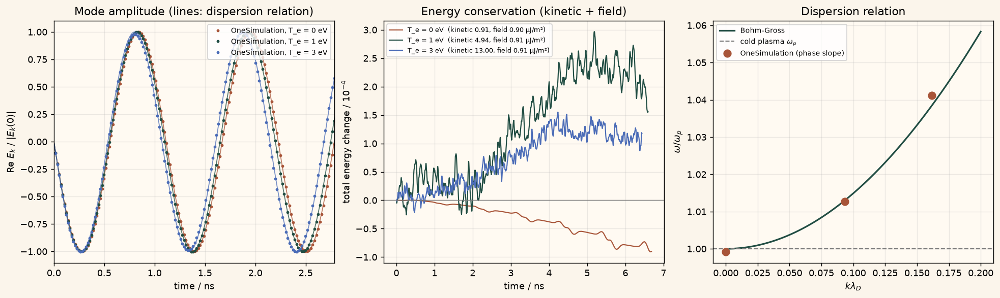

Docs › Examples › Electron plasma oscillations with particle-in-cell
Kinetic plasma · 1D
Electron plasma oscillations with particle-in-cell
Cold and warm electron plasma waves in a periodic box, graded against the plasma frequency and the Bohm-Gross dispersion relation.

What it computes
OneSimulation advances electrons with a 1D electrostatic particle-in-cell scheme (cloud-in-cell deposit, spectral Poisson solve, Boris push) over an immobile ion background and measures the wave frequency from the phase of the launched mode at 0, 1 and 3 eV.
What it checks
Frequencies are within 0.3 % of the dispersion relation, the period from zero crossings within 1 %, total energy drifts by less than 0.05 % and Gauss's law holds to machine precision.
The notebook
The complete notebook, cell by cell. Run it to produce the figures and the comparison printout.
A uniform electron plasma of density \(n_0\) sits in a neutralising background of immobile ions. If the electrons are displaced by a small sinusoidal amount \(\xi(x)=A\sin kx\), the space charge that builds up pulls them back and the plasma oscillates at the electron plasma frequency. OneSimulation follows the electrons as macro-particles on a periodic grid (cloud-in-cell deposition and gather, spectral Poisson solve, Boris push with a second-order predictor), so the oscillation is produced by the self-consistent electric field, not by a fluid closure.
Reference. The cold-plasma dispersion relation gives a frequency that does not depend on the wavenumber,
and for a warm electron gas with thermal speed \(v_{th}=\sqrt{k_B T_e/m_e}\) the Bohm-Gross relation
raises it slightly (Landau damping is negligible for \(k\lambda_D\lesssim 0.2\)). A travelling wave \(\xi=A\sin(kx-\omega t)\) makes the complex Fourier amplitude of the electric field rotate at exactly \(\omega\); its phase slope is the measured frequency. The kinetic plus electrostatic field energy must stay constant, and Gauss's law must hold on the grid at every step.
from importlib.metadata import version
import numpy as np
import matplotlib.pyplot as plt
from scipy.constants import e, m_e, epsilon_0
from scipy.special import erfinv
from onesim.physics.plasma import PICSpecies, PeriodicParticleInCell
print("OneSimulation:", version("onesimulation"))Parameters
SI units throughout: a laboratory-type plasma of \(10^{16}\,\mathrm{m^{-3}}\) (plasma frequency \(f_p\approx 0.9\) GHz). The periodic box holds one wavelength of the perturbation. Three electron temperatures are run: a cold plasma and two warm ones whose Bohm-Gross shifts are about 1 % and 4 %. The displacement amplitude is 1 % of the box, i.e. a density perturbation of about 6 %, which keeps the oscillation linear.
n_0 = 1.0e16 # m^-3, electron (and ion background) density
L = 5.0e-3 # m, periodic box length = one wavelength
temperatures_eV = (0.0, 1.0, 3.0) # eV, electron temperatures of the three runs
cells = 64 # grid cells in the box
particles_per_cell = 400 # macro-particles per cell
amplitude = 0.01 * L # m, displacement amplitude A
steps_per_radian = 50 # omega_p dt = 1/50
sample_every = 5 # time steps between two stored samples
periods = 6.0 # simulated duration in oscillation periods
omega_p = np.sqrt(n_0 * e**2 / (epsilon_0 * m_e))
k = 2.0 * np.pi / L
time_step = 1.0 / (steps_per_radian * omega_p)
N = cells * particles_per_cell
print(f"omega_p = {omega_p:.4e} rad/s (f_p = {omega_p / (2 * np.pi) / 1e9:.3f} GHz), k = {k:.1f} 1/m")
def thermal_speed(T_eV):
return np.sqrt(e * T_eV / m_e)
def debye_length(T_eV):
return np.sqrt(epsilon_0 * e * T_eV / (n_0 * e**2))
def bohm_gross(T_eV):
return np.sqrt(omega_p**2 + 3.0 * k**2 * thermal_speed(T_eV) ** 2)
for T in temperatures_eV:
print(f"T_e = {T:.0f} eV: k lambda_D = {k * debye_length(T):.3f}, "
f"Bohm-Gross omega / omega_p = {bohm_gross(T) / omega_p:.4f}")Particle-in-cell runs
The electrons start on a uniform lattice shifted by \(A\sin kx_0\), with the matching velocity \(-A\,\omega\cos kx_0\) of the travelling wave; the warm runs add a quiet-start Maxwellian (inverse-CDF velocities, scrambled with a fixed seed) on top. The ions are the uniform background charge density \(+e n_0\), so the box is neutral. The only boundaries of this model are the two periodic ends of the box. The time series is obtained by chaining short segments, each restarted from the previous particle state, which reproduces a single long run step for step because the pusher keeps positions and velocities synchronised.
model = PeriodicParticleInCell(
lengths=(L,), cells=(cells,), background_charge_density=e * n_0,
)
x_grid = np.arange(cells) * L / cells
x_0 = (np.arange(N) + 0.5) * L / N
print(f"Grid: {cells} cells, {N} macro-particles, omega_p dt = {omega_p * time_step:.3f}, periodic in x")
runs = {}
for T in temperatures_eV:
omega_ref = bohm_gross(T)
velocities = np.zeros((N, 3))
velocities[:, 0] = -amplitude * omega_ref * np.cos(k * x_0)
if T > 0.0:
quantiles = (np.arange(N) + 0.5) / N
maxwellian = np.sqrt(2.0) * thermal_speed(T) * erfinv(2.0 * quantiles - 1.0)
velocities[:, 0] += np.random.default_rng(7).permutation(maxwellian)
electrons = PICSpecies(
positions=(x_0 + amplitude * np.sin(k * x_0))[:, None],
velocities=velocities, mass=m_e, charge=-e, weights=n_0 * L / N,
)
n_samples = int(round(periods * 2.0 * np.pi / omega_ref / (sample_every * time_step)))
times, mode, kinetic, field, gauss = [], [], [], [], []
t = 0.0
for _ in range(n_samples):
res = model.solve(species=(electrons,), time_step=time_step, steps=sample_every)
electrons = res.species[0]
t += float(res.time[-1])
times.append(t)
# Complex amplitude of the k mode of E_x on the grid nodes.
mode.append(2.0 / cells * np.sum(res.electric_field[:, 0] * np.exp(-1j * k * x_grid)))
kinetic.append(res.kinetic_energy[1:])
field.append(res.field_energy[1:])
gauss.append(res.gauss_residual.max())
runs[T] = dict(
times=np.asarray(times), mode=np.asarray(mode), omega_ref=omega_ref,
kinetic=np.concatenate(kinetic), field=np.concatenate(field),
gauss=max(gauss), final=res,
)
print(f"T_e = {T:.0f} eV: {n_samples * sample_every} steps to t = {t * 1e9:.2f} ns ({periods:.0f} periods)")Measured frequency versus the dispersion relation
The complex mode amplitude \(E_k(t)\) rotates with constant modulus; the slope of its unwrapped phase is the angular frequency. The period is also read from the zero crossings of \(\mathrm{Re}\,E_k\). The energy balance uses the kinetic and electrostatic field energies reported by the solver after every step.
print(f"{'T_e / eV':>9} {'omega / omega_p':>16} {'Bohm-Gross':>11} {'rel. error':>11} {'energy drift':>13} {'|E_k| drift':>12}")
for T, run in runs.items():
phase = np.unwrap(np.angle(run["mode"]))
omega_measured = abs(np.polyfit(run["times"], phase, 1)[0])
real = run["mode"].real
crossings = np.flatnonzero(np.sign(real[:-1]) != np.sign(real[1:]))
t_cross = [t0 - r0 * (t1 - t0) / (r1 - r0) for t0, t1, r0, r1 in
zip(run["times"][crossings], run["times"][crossings + 1], real[crossings], real[crossings + 1])]
period_measured = 2.0 * np.mean(np.diff(t_cross))
total = run["kinetic"] + run["field"]
run["omega_measured"] = omega_measured
run["rel_error"] = abs(omega_measured - run["omega_ref"]) / run["omega_ref"]
run["period_error"] = abs(period_measured - 2.0 * np.pi / run["omega_ref"]) * run["omega_ref"] / (2.0 * np.pi)
run["energy_drift"] = float(np.max(np.abs(total / total[0] - 1.0)))
run["modulus_drift"] = float(np.max(np.abs(np.abs(run["mode"]) / np.abs(run["mode"][0]) - 1.0)))
run["gauss_relative"] = run["gauss"] / (e * n_0)
print(f"{T:>9.0f} {omega_measured / omega_p:>16.5f} {run['omega_ref'] / omega_p:>11.5f} "
f"{100 * run['rel_error']:>10.3f}% {run['energy_drift']:>13.1e} {run['modulus_drift']:>12.1e}")
print(f" period from zero crossings off by {100 * run['period_error']:.3f} %, "
f"max Gauss residual / (e n_0) = {run['gauss_relative']:.1e}")
assert run["rel_error"] < 5e-3, f"T_e={T}: phase-slope frequency off by more than 0.5 % from the dispersion relation."
assert run["period_error"] < 1e-2, f"T_e={T}: zero-crossing period off by more than 1 %."
assert run["energy_drift"] < 5e-3, f"T_e={T}: kinetic + field energy drifts by more than 0.5 %."
assert run["gauss_relative"] < 1e-10, f"T_e={T}: Gauss's law is violated on the grid."
# The cold run must sit on omega_p itself, the cold wave must keep its amplitude,
# and the warm runs must show the Bohm-Gross upshift rather than omega_p.
cold = runs[0.0]
assert abs(cold["omega_measured"] - omega_p) / omega_p < 5e-3, "Cold plasma frequency is not omega_p."
assert cold["modulus_drift"] < 1e-2, "The cold travelling wave must keep its amplitude."
for T in temperatures_eV[1:]:
shift_ref = runs[T]["omega_ref"] / omega_p - 1.0
shift_measured = runs[T]["omega_measured"] / omega_p - 1.0
print(f"T_e = {T:.0f} eV: thermal upshift measured {100 * shift_measured:.2f} %, Bohm-Gross {100 * shift_ref:.2f} %")
assert abs(shift_measured - shift_ref) < 0.3 * shift_ref, f"T_e={T}: Bohm-Gross shift not resolved."Figure
Left: \(\mathrm{Re}\,E_k\) of the three runs against the reference \(|E_k(0)|\cos(\omega t+\varphi_0)\). Centre: the relative change of the total (kinetic plus electrostatic) energy of the three runs; in a travelling wave both parts are separately constant, so the sum must not drift. Right: the measured frequencies on the Bohm-Gross curve \(\omega/\omega_p=\sqrt{1+3k^2\lambda_D^2}\).
cream = "#fbf5eb"
fig, (ax_t, ax_e, ax_w) = plt.subplots(1, 3, figsize=(15, 4.4), constrained_layout=True)
fig.patch.set_facecolor(cream)
colors = {0.0: "#A85539", 1.0: "#214D43", 3.0: "#4B6CB7"}
for T, run in runs.items():
scale = np.abs(run["mode"][0])
ax_t.plot(run["times"] * 1e9, run["mode"].real / scale, "o", ms=2.2, color=colors[T], label=f"OneSimulation, T_e = {T:.0f} eV")
t_fine = np.linspace(0.0, run["times"][-1], 800)
phi_0 = np.angle(run["mode"][0]) + run["omega_ref"] * run["times"][0]
ax_t.plot(t_fine * 1e9, np.cos(phi_0 - run["omega_ref"] * t_fine), "-", lw=1.0, color=colors[T], alpha=0.75)
ax_t.set_facecolor("#fffaf2"); ax_t.grid(alpha=0.25)
ax_t.set(xlabel="time / ns", ylabel="Re $E_k$ / $|E_k(0)|$", title="Mode amplitude (lines: dispersion relation)")
ax_t.set_xlim(0.0, 2.5 * 2.0 * np.pi / omega_p * 1e9)
ax_t.legend(loc="upper right", fontsize=8)
for T, run in runs.items():
total = run["kinetic"] + run["field"]
t_energy = np.arange(1, len(total) + 1) * time_step * 1e9
ax_e.plot(t_energy, 1e4 * (total / total[0] - 1.0), color=colors[T], lw=1.2,
label=f"T_e = {T:.0f} eV (kinetic {run['kinetic'][0] / 1e-6:.2f}, field {run['field'][0] / 1e-6:.2f} µJ/m²)")
ax_e.axhline(0.0, color="#7a7a7a", lw=0.8)
ax_e.set_facecolor("#fffaf2"); ax_e.grid(alpha=0.25)
ax_e.set(xlabel="time / ns", ylabel="total energy change / 10$^{-4}$", title="Energy conservation (kinetic + field)")
ax_e.legend(loc="upper left", fontsize=7)
k_lambda = np.linspace(0.0, 0.2, 200)
ax_w.plot(k_lambda, np.sqrt(1.0 + 3.0 * k_lambda**2), "-", color="#214D43", lw=1.8, label="Bohm-Gross")
ax_w.axhline(1.0, ls="--", color="#7a7a7a", lw=1.2, label="cold plasma $\\omega_p$")
ax_w.plot([k * debye_length(T) for T in runs], [runs[T]["omega_measured"] / omega_p for T in runs],
"o", ms=8, color="#A85539", label="OneSimulation (phase slope)")
ax_w.set_facecolor("#fffaf2"); ax_w.grid(alpha=0.25)
ax_w.set(xlabel="$k\\lambda_D$", ylabel="$\\omega / \\omega_p$", title="Dispersion relation")
ax_w.legend(loc="upper left", fontsize=8)
plt.show()Going further
Raise temperatures_eV towards \(k\lambda_D\approx 0.4\) to watch Landau damping set in and compare the decay rate of \(|E_k|\) with the Landau formula, or increase amplitude until the electron sheets cross and the oscillation stops being linear. A second PICSpecies of mobile ions turns the background into a real two-species plasma and adds the ion-acoustic branch at low frequency.